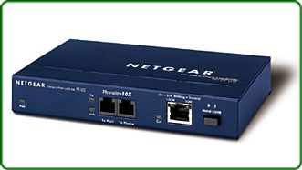

Bridge (Puente de Red)
Los puentes son utilizados para interconectar segmentos, un puente se encarga de repetir paquetes. De hecho, un puente es un computador con dos interfaces Ethernet. El puente opera sobre ambas interfaces, capturando una de las tarjetas todos los paquetes válidos y entregándolos a la siguiente.
Un bridge conecta segmentos de red formando una sola subred. Funciona a través de una tabla de direcciones MAC detectadas en cada segmento al que está conectado. Cuando detecta que un nodo de uno de los segmentos está intentando transmitir datos a un nodo del otro, el bridge copia la trama para la otra subred, teniendo la capacidad de desechar la trama en caso de no tener dicha subred como destino. Para conocer por dónde enviar cada trama que le llega incluye un mecanismo de autoaprendizaje, por lo que no necesitan configuración manual.

¿En qué consiste el aprendizaje de los puentes de red?
Los puentes de red usan una tabla de reenvío para enviar tramas a lo largo de los segmentos de la red. Dicha tabla incluye tres campos: dirección MAC, interfaz a la que está conectada y la hora a la que llegó la trama (a partir de este campo y la hora actual se puede saber si la entrada está vigente en el tiempo). El bridge utilizará esta tabla para determinar qué hacer con las tramas que le llegan.
Características y consideraciones sobre el Puente de red:
Los puentes son superiores a los repetidores porque estos no retransmiten errores, ruido o paquetes deformados. Los puentes pueden hacer decisiones inteligentes. Un puente puede lograr aumentar la longitud de una red; de modo que unos usuarios pueden alcanzar a otros como si todos estuvieran situados en el mismo segmento de red. Un puente es como un repetidor, pero añade una función de “portero”.